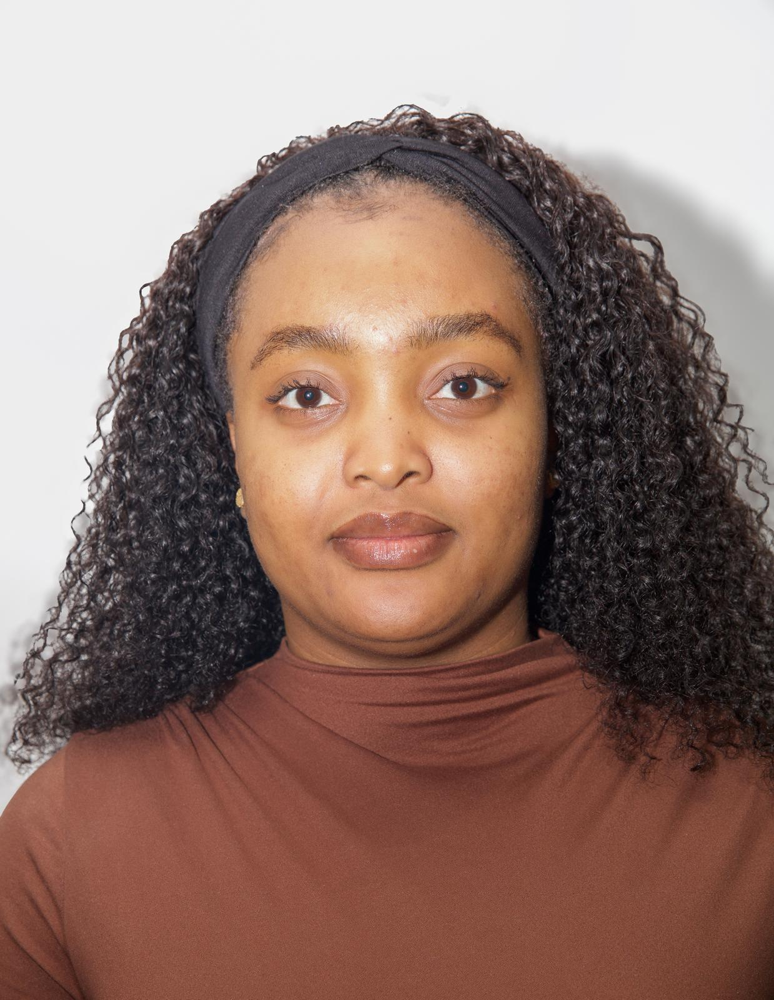

About
The Roehampton Sustainable Futures Hub exists to close the gap between academic research and real‑world climate action. Our purpose is to turn insight into impact by supporting communities, local authorities, SMEs and grassroots organisations to design and deliver sustainability projects that create measurable change. We help partners transform their ambitions into practical solutions, whether that means improving air quality, expanding access to green skills, strengthening community resilience, developing nature‑based interventions, or piloting innovative climate initiatives across London boroughs. At the heart of our purpose is a commitment to people, place and partnership. We bring together researchers, students, practitioners and residents to co‑create approaches that are grounded in lived experience, informed by evidence, and designed for long‑term social and environmental benefit.
Our Purpose
The Hub exists to bridge the gap between research and real‑world action. We support partners to turn sustainability ambitions into practical, measurable outcomes, whether that’s improving air quality, expanding green skills, creating community climate hubs, or piloting nature‑based solutions across London boroughs.
Our Approach
We work collaboratively, combining academic insight with community knowledge and lived experience. Our model is built on co‑creation: listening first, designing with partners, and ensuring that every project reflects local priorities, cultural context and long‑term needs.
Our Values
Everything we do is grounded in collaboration, evidence‑led action, community empowerment, transparency and inclusivity. These values guide how we build partnerships, how we design programmes, and how we measure impact.
What We Do
The Hub supports a growing portfolio of sustainability and community‑focused initiatives. Our work spans research, training, partnership development and on‑the‑ground project delivery.
Applied Research & Insight
We generate evidence that helps partners make informed decisions—ranging from feasibility studies and needs assessments to evaluation frameworks and policy‑relevant research. Our academic teams and students work alongside community organisations to ensure insights are grounded in lived experience.
Green Skills & Workforce Development
We collaborate with employers, training providers and local authorities to design pathways into green careers. This includes community‑based learning, accredited programmes, professional upskilling and opportunities for young people entering the green economy.
Project Design & Delivery
From early‑stage ideas to full programme delivery, we help partners shape, fund and implement sustainability projects. This includes partnership building, bid development, governance support, monitoring and evaluation, and connecting projects with university expertise.
How We Work
Our model is built on partnership. We don’t deliver projects “to” communities; we work with them, recognising local leadership, knowledge and priorities.
Co‑Creation with Communities
We involve residents, grassroots groups and frontline organisations from the start. Through workshops, listening sessions and participatory design, we ensure that projects reflect local needs and build long‑term community capacity.
Cross‑Sector Collaboration
Our partnerships span councils, NGOs, SMEs, social enterprises, funders and universities. By convening diverse partners, we help align resources, avoid duplication and create joined‑up responses to climate, health and social challenges.
Learning Through Practice
Students contribute to live projects through placements, dissertations, volunteering and co‑research. This strengthens community initiatives while giving students real‑world experience in sustainability, social impact and partnership working.
Our Current Focus Areas
The Hub’s work evolves in response to local priorities and emerging opportunities. Our current focus areas include:
Community Climate Hubs
Supporting spaces like the Kingston Hive and other grassroots hubs where residents can learn, organise, repair, share skills and take climate action together. These hubs strengthen social connection and local resilience.
Nature‑Based Solutions & Air Quality
Through initiatives like ALII (Air & Living Infrastructure Initiative), we work with partners to pilot green infrastructure, improve air quality and bring nature into urban environments in ways that benefit health, wellbeing and biodiversity.
Green Skills & Inclusive Economies
We help shape training and employment pathways that open up opportunities in retrofit, sustainable construction, circular economy, environmental management and other green sectors— ensuring that London’s transition is fair and inclusive.
Who We Support
The Hub is open to organisations and individuals who want to collaborate on practical, community‑centred sustainability.
Community Organisations & NGOs
We support grassroots groups, charities and social enterprises working on climate, health, housing, food, nature and social justice. The Hub provides partnerships and research assistants that aid in research, transiting into funding pathways.
Local Authorities & Public Bodies
We collaborate with councils and public agencies to support place‑based strategies, pilots and programmes that align climate action with social outcomes and community priorities.
SMEs & Employers
We help businesses explore net‑zero, circular practices, workforce development and community partnerships—supporting them to build future‑ready, sustainable operations.
Work With Us
Whether you are developing a new idea, seeking research support, exploring green skills, or looking to collaborate on a community project, the Roehampton Sustainable Futures Hub is here to help. Together, we can design and grow initiatives that centre people, protect the planet and build lasting partnerships across London.
Visit our Contact page to get in touch, or explore our Projects and Events pages to see our work in action.
Meet the Team
The people leading the Roehampton Sustainable Futures Hub.

Dr. Ayse Demir
Project Director
Project Director of the Roehampton Sustainable Futures Hub and Associate Professor in the Faculty of Business and Law.
Dr. Ayse Demir leads the strategic direction, partnerships and research agenda of the Roehampton Sustainable Futures Hub. Her work bridges sustainability, community development, green skills, inclusive economies and evidence‑led policy.
She has led major applied research programmes on air quality, green infrastructure, gender equity, financial inclusion, and the role of SMEs in sustainable development. Her leadership ensures that the Hub’s work is grounded in community priorities, academic rigour and long‑term impact.
Dr. Demir champions co‑creation, working closely with residents, grassroots groups and local authorities to design sustainability projects that are practical, equitable and rooted in lived experience.
She also creates opportunities for Roehampton students to engage in live sustainability projects through placements, dissertations and community‑based research, strengthening both student learning and community capacity.

Dr. Atiqur Khan
Senior Lecturer, Finance & Governance
Senior Lecturer in Finance & Governance and key academic collaborator within the Roehampton Sustainable Futures Hub.
Dr. Atiqur (Atiq) Khan is a Senior Lecturer in Finance and Governance at the University of Roehampton’s Faculty of Business and Law. His work strengthens the Hub’s mission by bringing deep expertise in sustainable finance, climate‑related risk, green economic transitions, and the resilience of financial systems.
His research examines how financial institutions, SMEs, and national economies respond to climate change, environmental policy, and sustainability‑driven regulatory shifts. This includes work on banking system resilience, renewable energy feasibility, and the financial behaviours of organisations navigating environmental transitions.
Dr. Khan has contributed to major international research projects, including a Marie Skłodowska‑Curie Fellowship on green economic transitions, a Development Bank of Wales project on SME environmental policy responses, and a Malaysian FRGS grant on renewable energy and deforestation.
Within the Hub, he supports research design, evaluation, and financial governance, ensuring that sustainability initiatives are both environmentally sound and economically viable.
With over a decade of teaching experience across the UK, Malaysia and Bangladesh, he supervises postgraduate research and integrates sustainability, finance and governance into student learning.
Dr. Burçak Erdoğan Onur
Landscape Architect & Environmental Psychologist
Landscape Architect, Environmental Psychologist, Researcher and Permaculture Designer contributing to community‑centred sustainability work at the Roehampton Sustainable Futures Hub.
Dr. Burçak Erdoğan Onur is a Landscape Architect, Environmental Psychologist, Researcher and Permaculture Designer whose work bridges ecological design, human wellbeing and community‑led sustainability. She brings an interdisciplinary perspective to the Roehampton Sustainable Futures Hub, strengthening its mission to build people‑centred, resilient and environmentally connected communities.
Her expertise spans nature‑based solutions, environmental behaviour, sustainable place‑making, and regenerative design. She contributes to the Hub’s research and community projects, including the Hub’s inaugural pilot initiative, Empowering Change: Understanding and Optimising Volunteer Engagement for Sustainable Impact in Merton, recognised in the UK Parliament.
With a background in both environmental psychology and landscape architecture, Dr. Erdoğan Onur focuses on how people interact with their environments and how ecological design can support wellbeing, climate resilience and community empowerment.
Her work helps the Hub design sustainability initiatives that are human‑centred, ecologically grounded and socially meaningful, aligning with the Hub’s People–Planet–Partnership approach.

Eva Idugboe
Communications,Marketing Lead & Digital Infrastructure
Leads communications, digital strategy and community partnerships for the Roehampton Sustainable Futures Hub, ensuring our work is accessible, engaging and grounded in community voices.
Eva plays a central role in shaping how the Roehampton Sustainable Futures Hub communicates its mission, impact and opportunities. She leads on storytelling, digital strategy and community‑focused engagement across the Hub’s projects, ensuring that our work is accessible, inclusive and grounded in the voices of the people we serve.
With experience across community development, creative communications and partnership building, Eva brings a unique ability to translate complex sustainability themes into clear, compelling narratives. She works closely with grassroots organisations, students, local authorities and project partners to amplify their work and highlight the real‑world change happening across our networks.
Eva also co‑leads the Hub’s communications and marketing function, overseeing social media, events visibility, brand alignment and content development across LinkedIn, Instagram and Facebook. Her work strengthens the Hub’s presence across London and supports collaborative, community‑centred sustainability.

Abena Ofosua Abboah-Offei
Web Design,Marketing Lead & Digital Infrastructure
Leads the Hub’s digital presence, branding and web infrastructure, ensuring our work is accessible, engaging and aligned with our People–Planet–Partnership mission.
Abena plays a key role in shaping the Roehampton Sustainable Futures Hub’s digital identity and communications. She leads on web design, branding, content development and digital infrastructure, ensuring that the Hub’s work is presented clearly, professionally and in a way that reflects the values of community‑centred sustainability.
Her work spans website development, visual identity, social media alignment and digital storytelling. Abena ensures that project pages, events, impact stories and community partnerships are communicated in a way that is accessible, visually coherent and grounded in the Hub’s mission.
She collaborates closely with project leads, students, community partners and the communications team to translate complex sustainability themes into engaging digital content. Her contributions strengthen the Hub’s visibility across London and support the development of a consistent, recognisable brand across LinkedIn, Instagram and Facebook.
Abena’s work underpins the Hub’s ability to share its impact, grow partnerships and support community‑led initiatives through clear, thoughtful and strategic digital design.